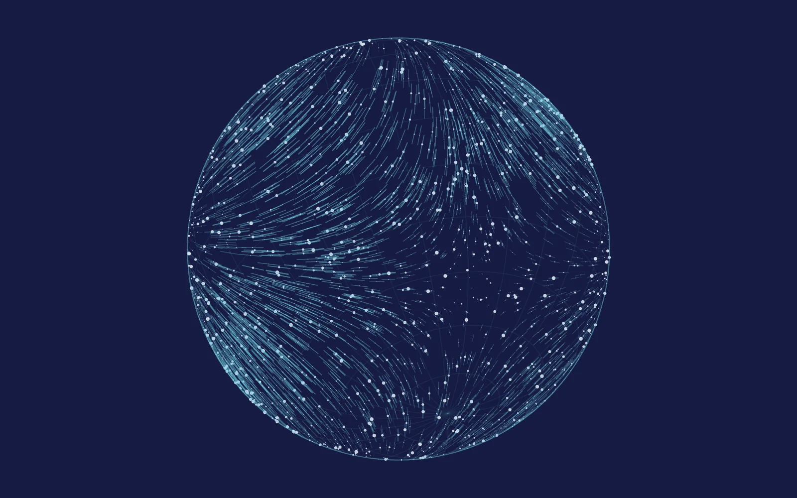

Research
How can fundamental physics be tested through the history of the universe? I approach this question by combining quantum field theory, cosmological dynamics, numerical calculations and new observational ideas.
-
Cosmology
Inflation, reheating & dark matter
Gravitational particle production, non-equilibrium dynamics, axions and the origin of the dark sector.
Explore this research
-
Particle physics
Particle physics & field theory
Electroweak sphalerons, supergravity, scattering amplitudes and models beyond the Standard Model.
Explore this research
-
Observables
Gravitational waves & new probes
Signals of spectator fields and cosmic strings, and new searches for ultralight dark matter.
Explore this research
-
Methods
Machine learning for theoretical physics
Learning symmetry generators and Lie algebras, and exploring the structure of flavor models.
Explore this research
A connected set of questions
My research begins with the physics of fields and particles: their interactions, symmetries and behavior in curved spacetime. I use these ingredients to study inflation, reheating and the population of the dark sector. I then ask which signatures survive in cosmological and astrophysical observations, from primordial perturbations and gravitational waves to the apparent motion of distant sources.
Alongside this cosmological program, I investigate electroweak field configurations, supergravity amplitudes and machine-learning approaches to theoretical model building. These directions share a practical goal: turn a well-defined theoretical question into a calculation, a testable prediction or a reusable method.
Current directions
Ongoing projects include gravitational particle production in supergravity, Hawking axions, the cosmic axion background, thermal damping of spectator fields and AI agents for particle physics. These projects are in preparation; released results appear in the publication list.